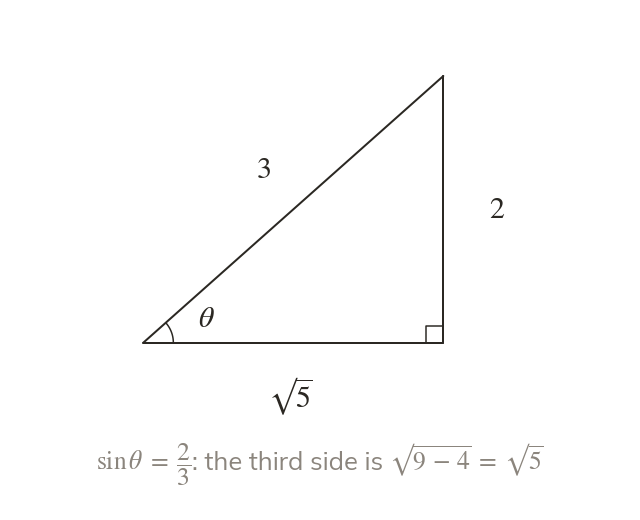
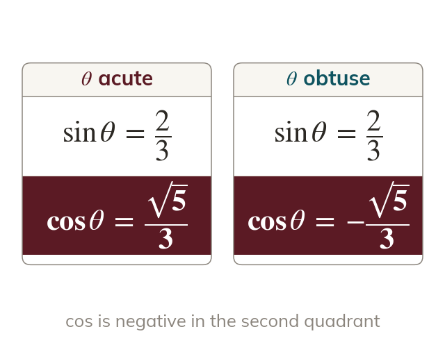
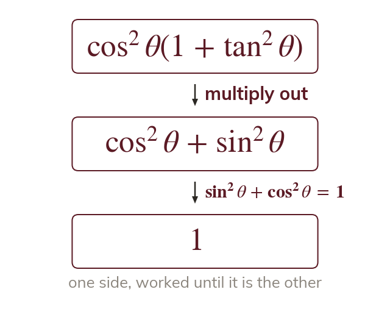
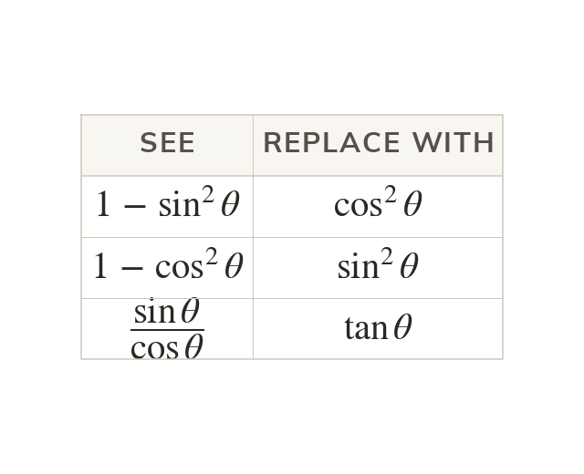
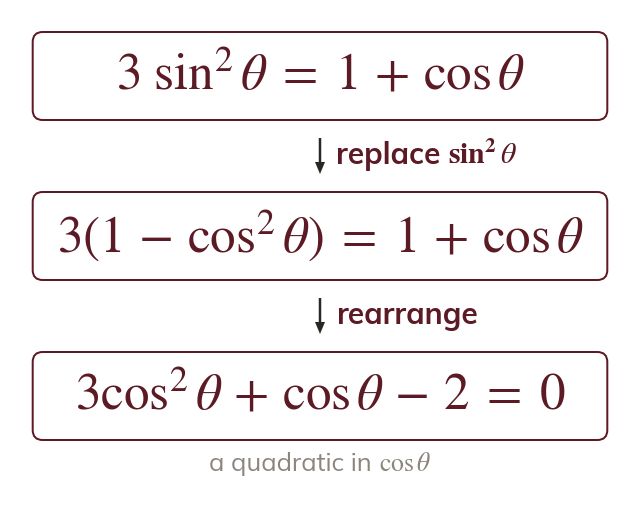

Pythagoras on the unit circle
The point lies on a circle of radius so for every θ. Dividing its y-coordinate by its x-coordinate gives
is Pythagoras on the unit circle, and with it links all three ratios. Today it gives exact values from one known ratio and proves identities; the equations of the next three lessons use it to leave one function.
Work down the page at your own pace. Write every answer in your book first, then click to check it.
Read each card, then follow the worked examples one step at a time.
The point lies on a circle of radius so for every θ. Dividing its y-coordinate by its x-coordinate gives

Knowing one ratio exactly, the identity gives the size of another. The square root leaves a ± until the quadrant decides.

The same size of ratio appears in two quadrants. CAST says which sign belongs to θ.
Pick an answer. If it's wrong, the feedback tells you which mistake it was.
Read each card, then follow the worked examples one step at a time.

An identity is true for every θ, so it is proved, not solved. Start from the more complicated side and change it, one step at a time, until it is the other side.

The identity also reads and Factorising and the difference of two squares often reveal one of them.

Replacing or leaves an equation with only one trigonometric function in it. It is then a quadratic in that function, ready to solve.
Pick an answer. If it's wrong, the feedback tells you which mistake it was.
Finished? Next lesson: 10.4 Simple Trigonometric Equations.
For each skill, tap the one that is true for you today. Your Revise pages start with anything you mark Not yet.
Your ratings are saved on this device only.
Log in, then search for a code to practise that skill.